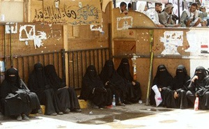

|
|

صالح رفت، اما مبارزه زنان یمن ادامه دارد
چهار شنبه30 فروردین 1391
خالد احمد، دانشجوی 24 ساله رشته جامعهشناسی و فعال حقوق زنان، که سال گذشته در برخی از اولین تظاهراتها برای برکناری عبدالله صالح شرکت کرده بود، میگوید: "در آن روز بود که فهمیدم ما دو مبارزه در پیش داریم. یک مبارزه سخت علیه رژیم، و مبارزه دیگری – مبارزهای درون این مبارزه – علیه عناصر داخل انقلاب که ما با ما و حقوقمان به عنوان زن، مخالف بودند."
یکی از فقیرترین کشورهای جهان و بدترین کشور از نظر برابری جنسیتی، طبق استانداردهای سازمان ملل از نظر بیسوادی و سایر عوامل، یمن است. زنان یمن با شرکت در اعتراضات علیه صالح و تبدیل شدن به محور اصلی آن سنتهای دیرینه را به چالش طلبیدند.
اکنون که صالح رفته و گذار سیاسی در پیش است، فعالان زن میترسند که کشور بدون آنها به پیش رود و مردانی که از حضور آنان در خیابان برای کسب آزادی خوشحال بودند، خواهان حضور آنها در مجلس، دانشگاهها یا محلهای کار نباشند.
فائزه الشامی، شاعر و فعال، میگوید: "جامعه ابتدا از ما استقبال کرد. ما بر تعداد معترضان میافزودیم... اکنون که صالح گریخته است، انتظار میرود که ما هم همان کار را بکنیم، یعنی خیابانها را ترک کنیم، از آزادیمان صرفنظر کنیم و به خانه برگردیم."
پس از 14 ماه مبارزه سیاسی، به زنانی نظیر شامی ثابت شده است که سرنگونی یک رژیم استبدادی شاید آسانتر از براندازی برتری مردان در کشوری فقیر و آشفته باشد که اکثر زنان آن در حاشیه قرار دارند.
شکستن مرزها
از اولین فریادهای نارضایتی در ژانویه گذشته، روشن بود که زنان نقشی بدیع در این مرحله از تاریخ یمن ایفا میکنند.
پس از آغاز اعتراضات زنان از حاشیه – تهیه پتو، آشپزی، مراقبت از مجروحان – به صف جلو آمدند.
از زنان آشنا به زبان انگلیسی، پزشکان، وکلا و استادان دانشگاه تا تعداد عظیم زنان تحصیلکرده بیکار و خانهدار، زنان دسته دسته به قیام پیوستند.
آنها سردسته تظاهرات خیابانی شدند، در چادرهای اعتراضی خوابیدند، اعتصاب غذا کردند و در وبلاگها و روزنامهها، اخبار اعتراضات را پوشش خبری دادند. همچنین از جمله صدها نفری بودند که سال پیش طی سرکوبهای خونین دولت کشته شدند.
فائزه سلیمانی، فارغالتحصیل رشته حسابداری و از رهبران تظاهراتها، پیش از آن که در تلویزیون نشان داده شود، به خانوادهاش در مورد شرکت در تظاهرات دروغ میگفت.
او میگوید: "مادرم دیگر با من حرف نمیزد و پدرم سرم داد میزد. در آن لحظه تصمیم گرفتم بیرون بروم و تمام مرزها را بشکنم، فقط برای آن که این پیام را برسانم که زنان یمنی هم این جا هستند. این اولین بار بود که به عنوان یک فرد، به عنوان یک زن فکر و عمل میکردم. ما ایدهها و تفکراتی داشتیم که باید با دیگران در میان میگذاشتیم، آیندهای را برای یمن در سر میپرورداندیم که باید بیانش میکردیم."
این آینده حتا یک چهره نیز یافت: توکل کارمان، مادر روسری به سر سه فرزندی که به چهره مهم سمبلیک تبدیل شد و سال پیش برنده جایزه صلح نوبل گشت؛ اولین زن عربی که چنین افتخاری نصیباش شد.
دستگیری وی در ژانویه سال گذشته در یکی از تظاهرات دمکراسیطلبانه، خشم مردم را برانگیخت و باعث شد تظاهرات بیرون خوابگاه دانشگاه صنعا به یک قیام تمام عیار تبدیل شود.
کارمان در ماه نوامبر، کمی بعد از گرفتن جایزه نوبل، در گفتگو با دو لیبریایی برای روشن کردن اهمیت حقوق زنان در حفظ صلح، گفت: "زنان دیگر قربانی نیستند، آنها به رهبر تبدیل شدهاند. آنها در صف اول تظاهرات هستند."
به نظر وی زنان در کشورهای عربی باید "حقوق خود را در جامعها ی مردسالار به دست آورند."
اما دستاوردهای سیاسی اندکی کسب شده است.
گرچه ۳ نفر از ۳۵ وزیر انتخاب شده برای دولت ملی وحدت که در دسامبر پس از کنارهگیری صالح تشکیل شده است، زن هستند، دو تن از آنان از اعضای دولت قبلی بوده و احزاب آنان همچنان در انحصار مردان قرار دارند.
برای شکستن این شبکهها پیش از انتخابات چند حزبی در سال 2014، برخی از فعالان زن در یمن خواهان وضع قانونی هستند که تخصیص 30 درصد از مقامات انتخابی و انتصابی سیاسی به زنان را تضمین کند.
رعنا جارهوم، از فعالان، میگوید: "این سهمیهبندی باعث میشود زنان در پستهای تصمیمگیری شرکت یابند... تقویت موقعیت آنان به تضعیف برخی از نظرات اجتماعی دگم که آنها را به حاشیه رانده است، کمک خواهد کرد."
تعدادی در کارایی چنین روشهایی شک دارند.
یکی از اعضای بلندپایه حزب "کنگره عمومی مردم"، صالح، میگوید: "ایران بیشترین تعداد زنان در مجلس را دارد، آیا باعث شده که با زنان رفتار بهتری شود؟ این فقط به دیکتاتورها کمک میکند که چهره بهتری از خود نشان دهند."
عدهای دیگر بر این نظرند که زنان باید خودشان رهبری را به دست گیرند.
وزیر حقوق بشر، حوریه مشهور، پس از جنجال ماه پیش در یکی از کنفرانسهای دولتی که طی آن فراکسیونهای مختلف زنان به سوی یکدیگر کفش پرتاب کردند، گفت: "اتحاد در میان زنان وجود ندارد، مشکل این است که آنها برای کسب خواستههایشان استراتژی ندارند. وقتی هر یک به حزب یا فرهنگ خود چسبیده است، رسیدن به توافق خیلی سخت میشود. صریح بگویم ما نتوانستهایم یک جنبش زنان یک دست در یمن به وجود آوریم."

ابزار سیاسی
در فقدان چنین جنبشی، به نظر میآید که محافظهکاران مذهبی جای خالی رهبری نقش زنان را پر کردهاند.
در "میدان تغییر" – میدانی که در آن طی تظاهرات چادر زده شده بود – آن اوایل یک طناب محل زنان و مردان تظاهرکننده را از هم جدا میکرد. اما اکنون جای این طناب را یک دیوار چوبی بلند گرفته که دری فلزی دارد.
به ادعای برخی از تظاهرکنندگان، جداسازی زنان و مردان نشاندهنده قدرتگیری مستمر "اصلاح"، یعنی حزب اسلامی قدرت یافته در طی جنبش اعتراضی و دوران پس از آن، است.
"اصلاح" که به عربی به معنای رفرم است، به خاطر مخالفتش با کاندیداتوری زنان و عدم تمایل به سازش در زمینه قوانین مربوط به زنان به دلایل مذهبی، مورد انتقاد قرار دارد. این حزب که در دسامبر توانست به حزب حاکم قدرتمند "کنگره عمومی مردم" به توافق برسد و وارد قدرت گردد، توانست اکثر زنان و سایر تظاهراتکنندگان را به سوی خود جلب کند.
سمینه ریفانی، 34 ساله و از سران سازمانده اعتراضات در این حزب، میگوید: "ما در عین تعقیب اهداف انقلاب، از ایمان و شرع اسلام پیروی میکنیم؛ بین این دو اختلافی وجود ندارد. ما هم میخواهیم فرهنگ تنگ نظرانهمان را اصلاح کنیم. نقش ما به عنوان زن در آینده یمن، تقویت و حمایت از اصول اسلامیمان خواهد بود. ما در تمام عرصههای زندگی دوشادوش مردان شرکت خواهیم کرد."
به علاوه، کارمان، برنده جایزه نوبل، هم از اعضای حزب اصلاح است و عقیده دارد که این حزب بیشتر از سایر احزاب فرصت در اختیار زنان قرار خواهد داد.
به گفته منتقدان او پردهایست که برنامه اجتماعی عقبمانده و مخفی حزب را میپوشاند. اما حزب با او مشکلات خاص خود را دارد؛ اعضای بسیار محافظهکار حزب راضی نیستند که او طرفدار تصویب قانونی است که سن ازدواج را از 15 سال به 18 سال افزایش دهد، آن هم در کشوری که دختران، به ویژه در مناطق روستایی، در سنین نوجوانی ازدواج میکنند.
فعالین میگویند که سیاستهای یمن به زودی خصومت خود را نسبت به جنبش نوپای زنان آشکار خواهند کرد.
عطیفه الوزیر، یک وبلاگنویس یمنی – آمریکایی، میگوید: "دوباره ثابت خواهد شد که هم برای اپوزیسیون و هم برای حزب حاکم، حقوق زنان ابزاری سیاسی است، نه این که واقعاً بخواهند بهبودی در وضعیت زنان ایجاد کنند. ما خیلی خوب میدانیم که در انقلابات گذشته در سراسر جهان چگونه از زنان استفاده شده است. حتا نمونههای متأخرتری در مصر داریم. تا زمانی که ما اتحاد و برنامه نیرومندی نداشته باشیم، تغییری در وضعیت زنان به وجود نخواهد آمد."